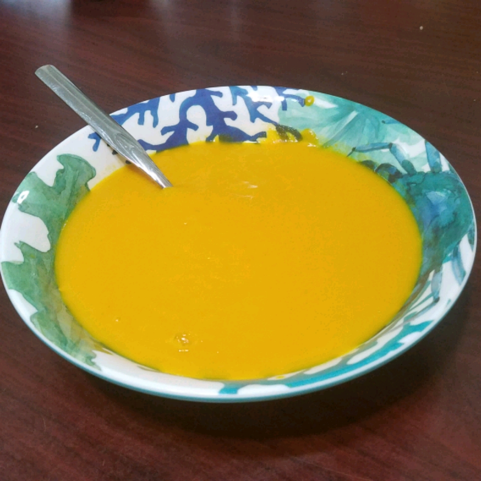

Carrot Soup

A Bowl of Warm and Tasty Carrot Soup
The fragrant, flavorful carrot soup is a wonderful addition to any special dinner. It takes around 30 minutes of prep time and needs around 1 hour of cooking time. This recipe serves 6.
Ingredients
- 3 pounds carrots, chopped
- 6 cups chicken stock
- 3 cloves garlic, chopped
- 2 tablespoons dried dill weed
- ¼ pound butter
- 1 ½ teaspoons salt
Steps
- In a medium-sized stockpot, over high heat, combine chicken stock, carrots, garlic, dill weed, salt, and butter.
- Bring to a boil, reduce heat and simmer for 30 minutes or until carrots are soft.
- Puree soup in a blender; return to the stockpot and simmer for an additional 30 to 45 minutes.
- Season with additional dill or garlic if needed.